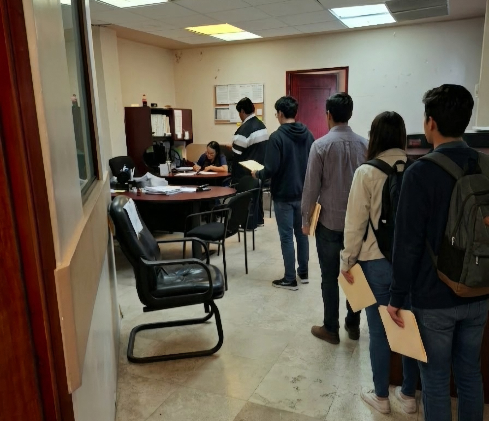

ARRANCA ENTREGA DE DOCUMENTOS DE LA BECA ITABEC EN LA FADYCS

El proceso de inscripción para la beca ITABEC, Futuro Tamaulipas ha comenzado en la FADYCS para el periodo agosto diciembre del presente año. Cientos de alumnos acudieron con la esperanza de recibir un apoyo económico para pasajes, materiales o gastos de inscripción que no pueden solventar por sí mismos.
La beca ITABEC es un apoyo otorgado por el Gobierno del Estado de Tamaulipas y está dirigido a estudiantes originarios de la entidad., consta de un pago a nivel semestral que se le otorga al alumno mediante un proceso de transferencia electrónica, que llega aproximadamente 4 meses después de que se lanza la convocatoria.
Sobre este trámite, el Mtro. Yair Acosta del Departamento de Becas de la FADYCS, explicó los criterios, las fechas y los lugares a los que pueden acudir los estudiantes para resolver sus dudas. “Los criterios son tener promedio mínimo de 8, sin materias reprobadas, y a partir de segundo semestre en adelante, y se puede ofrecer la ayuda a foráneos si tienen el certificado de prepa aquí, en el estado, en primer semestre de la universidad” explicó.
Además, el maestro detalló que el proceso consiste en realizar el registro a través de la página de ITABEC y buscar la convocatoria Futuro Tamaulipas, dirigida a estudiantes universitarios y de posgrado. “La recepción de documentos empezó el día 19 de agosto y, en la facultad, vamos a manejar dos clausuras distintas: el día 31 de agosto, que es el último día para entregar documentos en físico aquí, en la Oficina de Orientación Educativa; y el 1 y 2 de septiembre vamos a estar en el Salón de Actos recibiendo, esto porque se espera una gran cantidad de alumnos”, expresó.
Asimismo, Acosta reveló algunas de las razones por las que determinados alumnos no son beneficiados con la beca. a: “El factor del salario de los padres no influye en el proceso de selección, es totalmente al azar, pero usualmente son alumnos que presentaron errores en su convocatoria, es por estas razones que algunos no reciben la beca” informó. De acuerdo con el maestro, en el proceso anterior se registraron 1,150 solicitudes, de las cuales 950 fueron aprobadas.
Finalmente hizo un llamado a los alumnos a ser parte de este beneficio: “Yo les recomiendo que vengan sin miedo aquí a la oficina de Orientación Educativa, segundo piso del edificio administrativo en horario de servicio de 9:30 A. M. a 4:30 P. M, aprovechen, es una oportunidad única de obtener un ingreso derivado del estudio, que les puede ayudar con sus gastos y les va a tomar menos de 5 minutos”.
← Regresar a la portada